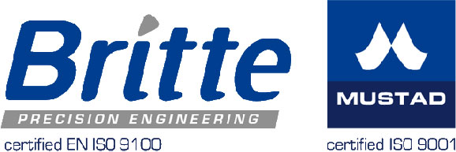
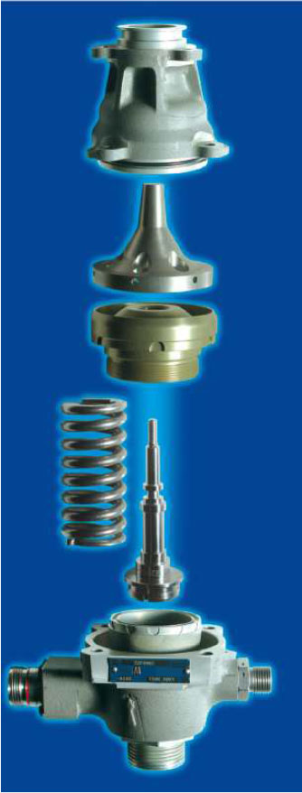
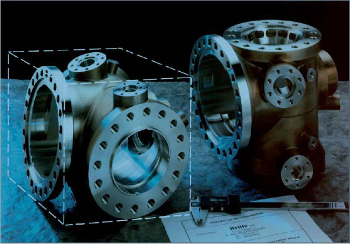
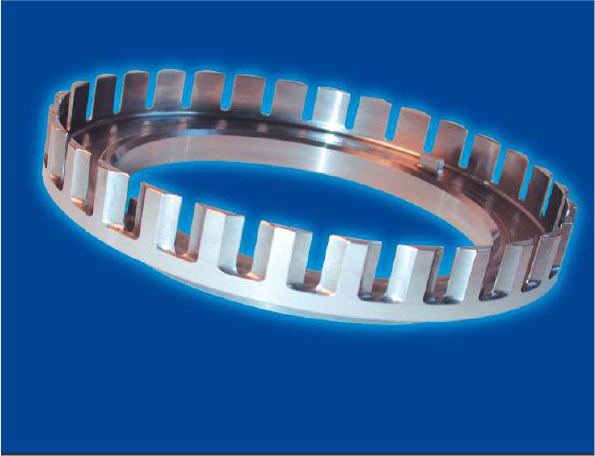

Pole of excellence in high precision mechanics
“Britte-Mustad” belongs to the mechanical
division of the family group MUSTAD
INTERNATIONAL GROUP founded in Norway in
1832.
This Family Group has built his reputation, not
only on the Quality of their products, their
diversified and industrial strategy, but also on the
respect of their commitments.
Britte-Mustad’s main missions are:
- Design and manufacturing of measuring and control systems
- Manufacturing of :
- unitary high precision mechanical components by various machining technologies. References : CERN, SCK-CEN…
- prototype series, and medium & large production batches, by various machining technologies
- Non-destructive control
- Assembly, welding and testing of electromechanical components in fields such as aeronautics, spatial, medical, nuclear and defence.
In the association with the other nearby division “Mustad Belgium”, which produces mechanical components by screw-cutting and machining on CNC production centers, we are able to cover a huge range of additional machining capabilities and a high level of technology.




Contact Person
Mr Giovanni SANNA
Plant Manager
email: wzi@britte.be, gsa@britte.be
tel: +32 4 256 90 60
fax: +32 4 264 08 63
http://www.britte.be
Rue de Cheratte 27
B-4683 Vivegnis (Oupeye)
Belgium
Contact Person
Mr Giovanni SANNA
Plant Manager
email: wzi@britte.be, gsa@britte.be
tel: +32 4 256 90 60
fax: +32 4 264 08 63
http://www.britte.be
Rue de Cheratte 27
B-4683 Vivegnis (Oupeye)
Belgium